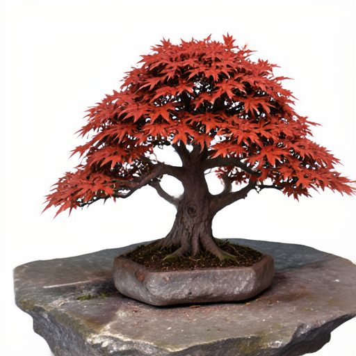

Un modelo de 4 mil millones de parámetros corre entero en tu navegador. Vos lo exponés como una API HTTP — sin servidor, sin costo, y tus datos nunca salen de tu máquina.

No hay una “nube mágica” corriendo el modelo. El modelo se descarga a tu navegador y usa tu placa de video. Esta herramienta le pone adelante una dirección web para que le puedas pedir imágenes desde afuera.
El modelo (~3,2 GB) se baja una vez y queda guardado. La imagen se genera en tu GPU, con WebGPU. Cero inferencia en un servidor.
Le mandás un texto por HTTP y te devuelve un PNG. Desde una terminal, un script, o cualquier app que hable HTTP.
La imagen se genera en tu máquina. Cloudflare solo hace de cartero entre tu pedido y tu pestaña. Todo en el plan gratuito.
Un navegador no tiene una dirección a la que llamar desde afuera — así que la pestaña es la que pregunta si hay trabajo. Cloudflare guarda tu pedido un instante hasta que la pestaña lo levanta.
Mientras la tengas abierta con el modelo cargado, la API funciona. Si la cerrás, la API responde 503 — sin worker. No es un servicio que corre solo: vos ponés la GPU, y a cambio no pagás cómputo ni servidores.
Es honesto por diseño: la privacidad y el costo cero salen justamente de que nada corre en un servidor.
↑ mientras esto esté abierto, la API atiende
Solo necesitás una cuenta de Cloudflare (el plan gratis alcanza). El resto lo hace el repo.
# 1) clonar git clone https://github.com/MauricioPerera/bonsai-image-api cd bonsai-image-api && npm install # 2) crear proyecto + secreto npx wrangler pages project create bonsai-image npx wrangler pages secret put API_SECRET # 3) desplegar npm run deploy
npm run build · Output: _site.API_SECRET (una contraseña tuya) y volvé a desplegar.Un secreto en Cloudflare solo toma efecto en despliegues nuevos: por eso hay que redesplegar después de agregarlo.
Al desplegar, el build descarga la app de imágenes de Hugging Face y le suma la capa de API. Nada se copia ni redistribuye — siempre toma la versión actual.
Como generar tarda medio minuto, la API te da un número de tarea al instante y vos consultás cuándo está — sin esperar colgado.
# 1) pedir (devuelve un id al instante) curl -X POST $URL/api/generate \ -H "Authorization: Bearer $SECRET" \ -d '{"prompt":"a bonsai tree at sunset"}' # 2) consultar el estado con ese id curl $URL/api/tasks/$id -H "Authorization: Bearer $SECRET" # 3) bajar el PNG cuando dice "done" curl $URL/api/image/$id -H "Authorization: Bearer $SECRET" -o out.png
Todos los endpoints piden el secreto (salvo /api/health) y fallan cerrados si falta.
Sondeando la tarea, ves esto:
El step N/4 es progreso real: sale del propio motor de difusión.
Al abrir la página aparece un panel con lo que tu dispositivo tiene. Atrapa lo que con certeza no puede correr el modelo — sin WebGPU, sin placa disponible, poco disco — antes de gastar la descarga.
Este panel chequea tu equipo de verdad, ahora — con el WebGPU de este navegador, sin descargar nada. Así sabés si te va a correr antes de desplegar.
Es honesto a propósito: este modelo se adapta a la placa que tengas, así que no promete un “va a andar” garantizado — pero sí te frena si es imposible. Los teléfonos, por ejemplo, quedan afuera y te lo dice al toque.